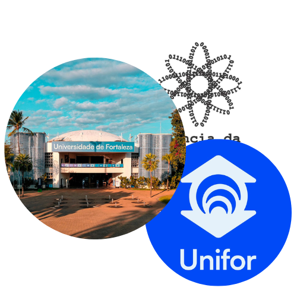
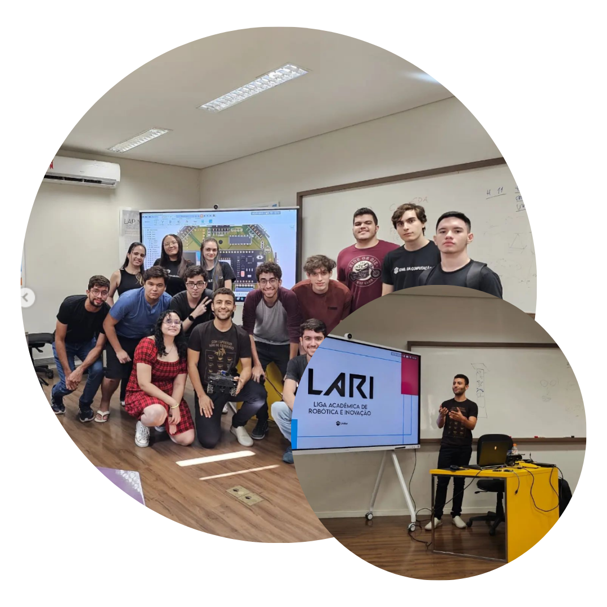
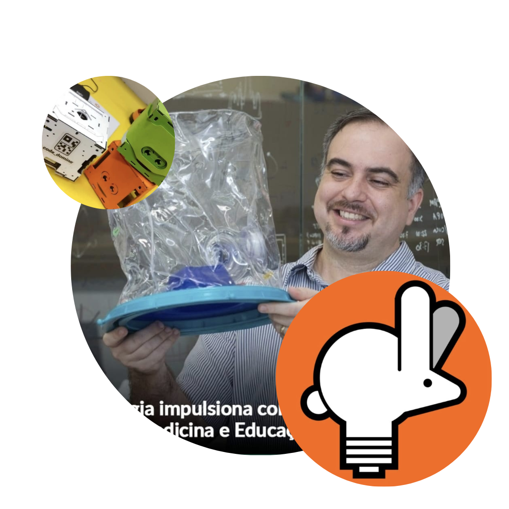
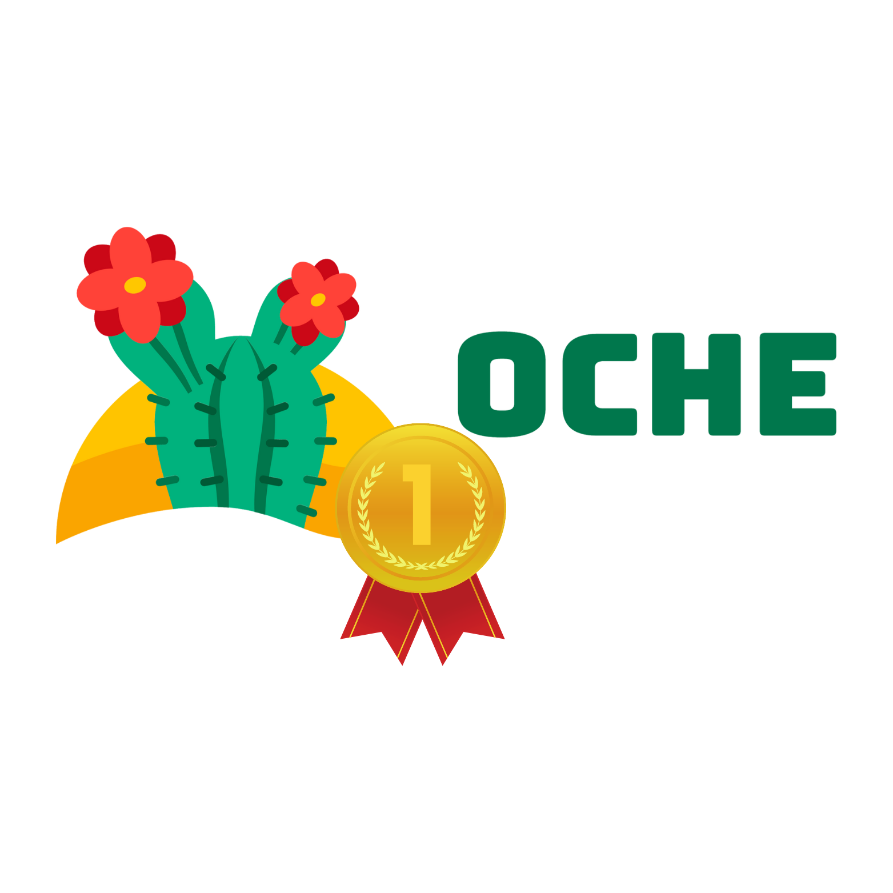
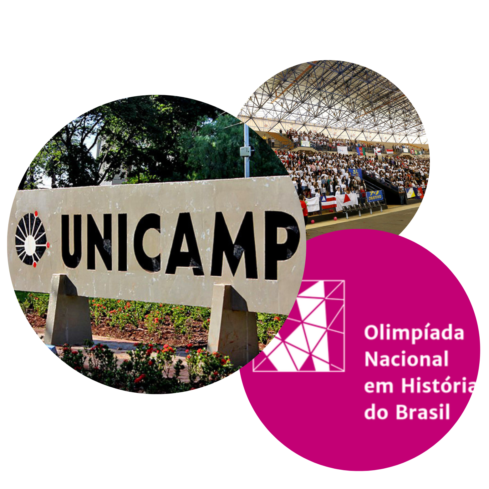
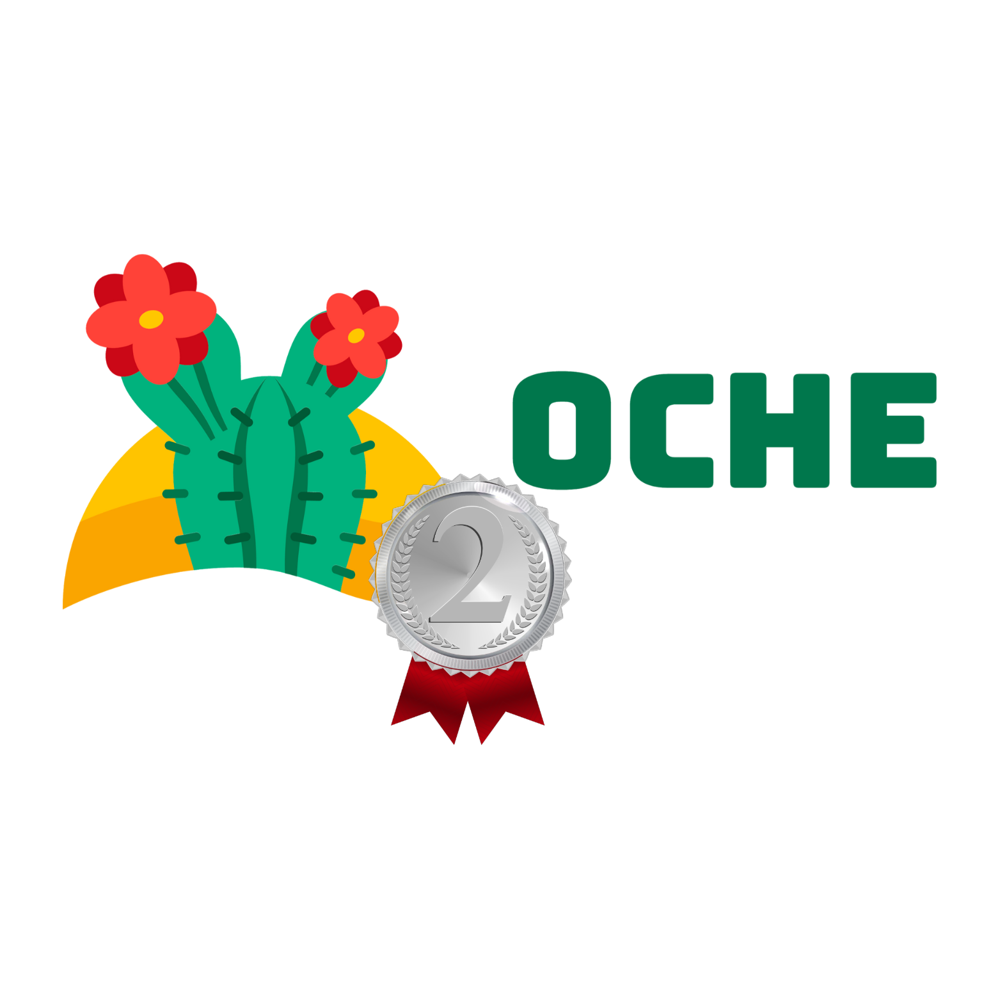

Sobre Mim
Trajetória
Currículo2024
G4Flex
Parque Tecnológico - Unifor
Fortaleza-CE

Atualmente sou estagiário da G4Flex Business & Services, onde faço parte do time de desenvolvimento de IA, trabalhando com o desenvolvimento de chatBot's usando, principalmente, o serviço Watson da IBM, além da criação de API's para multiplos serviços e empresas de diferentes ramos do mercado, como a Pague Menos, Unifor, 3Coraçõe, Ibyte etc.
2024
Centro Acadêmico de Ciência da Computação
UNIFOR
Fortaleza-CE

Atualmente sou Vice-Presidente e Diretor de Finanças e Bens do Centro Acadêmico de Ciência da Computação, tenho como função coordenar todas as diretorias, como a Diretoria e Pesquisa e Inovação, promover eventos no âmbito acadêmico, fomentar o desenvolvimento dos alunos, custear alguns projetos acadêmicos dentro da Universidade e aproximar a comunidade acadêmica, estreitando as relações entre professores, pesquisadores e alunos.
2023
LARI
UNIFOR
Fortaleza-CE

A LARI (Liga Acadêmica de Robótica) é uma iniciativa dos alunos da Unifor que busca promover o desenvolvimento de pesquisas e projetos de robótica e inovação na universidade, proporcionando aos estudantes oportunidades de aprendizado, participação em competições e desenvolvimento de habilidades.
2022
LAPIN JR.
UNIFOR
Fortaleza-CE

O grupo de estudos do LAPIN (Laboratório de Pesquisa e Inovação em Cidades) é um grupo voltada para a discussão e elaboração de projetos práticos dentro do laboratório, entre eles estão projetos do ramo de robótica, IOT, tecnologia educacional e muitos outros que chegam até o laboratório por meio de demandas da universidade e de parcerias entre o setor público e privado.
2020
OCHE
IFCE
Fortaleza-CE

Na segunda vez em que participei da OCHE pude ver como a experiência faz diferença na hora de entregar resultados, apesar dos desafios diferentes e ainda mais complexos cheguei até a etapa final da olímpiada e dessa vez obtive a tão sonhada medalha de ouro.
2019
ONHB
UNICAMP
Campinas-SP

Ter chegado à final da Olimpíada Nacional em História do Brasil foi uma experiência incrivelmente enriquecedora. Esta competição não apenas testou meus conhecimentos em história, mas também me ensinou a importância da pesquisa, análise crítica de fontes históricas e trabalho em equipe. Ao longo do processo, descobri o quão fascinante a história do Brasil pode ser, e como cada período e evento moldou nossa sociedade. Além disso, a ONHB incentivou meu amor pela aprendizagem contínua e pelo entendimento mais profundo do passado do meu país. Esta jornada me mostrou que a história é muito mais do que datas e fatos; é a narrativa que nos conecta ao nosso passado e nos ajuda a compreender o presente.
2019
OCHE
IFCE
Fortaleza-CE

Na Olímpiada de Ciências Humanas do Estado do Ceará pude desenvolver ainda mais minhas habilidades de pesquisa, investigação e minha capacidade de aprendizado ao ter que lidar com questões desafiadoras que envolviam problemas contemporâneos nas mais diversas áreas dentro das ciências humanas. Ao passar por várias fases dentro da olímpiada fui até a fase final onde obtive a medalha de prata.
Formação
2022 - Atualmente
Unifor
Fortaleza-CE
Bacharelado
Ciência da Computação
2021 - Trancamento
IFCE
Fortaleza-CE
Bacharelado
Engenharia da Computação